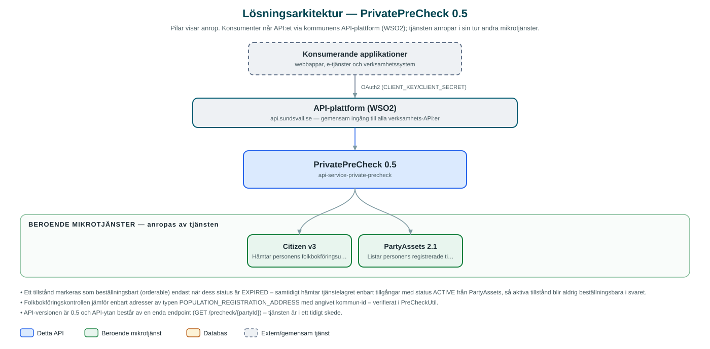

PrivatePreCheck
Förkontroll för privatpersoner: svarar på om en person är folkbokförd i kommunen och vilka tillstånd personen redan har – till exempel innan en ansökan om parkeringstillstånd påbörjas.
Om API:et
PrivatePreCheck används som förkontroll i e-tjänster riktade till privatpersoner. Med ett enda anrop får e-tjänsten veta dels om personen är folkbokförd i kommunen, dels vilka tillstånd (till exempel parkeringstillstånd) personen redan har registrerade – och om ett nytt kan beställas.
Kontrollen bygger på två av kommunens mikrotjänster: Citizen, som ger personens folkbokföringsuppgifter, och PartyAssets, som listar personens registrerade tillgångar. Folkbokföringskontrollen görs genom att personens folkbokföringsadress jämförs med angivet kommun-id.
Resultatet kan filtreras på tillståndstyp via en frågeparameter, så att e-tjänsten bara får svar för den tillståndstyp ansökan gäller.
Det här gör API:et
- Folkbokföringskontroll – Avgör om personen är folkbokförd i angiven kommun genom uppslag av folkbokföringsadressen via Citizen.
- Tillståndsöversikt – Listar personens registrerade tillstånd från PartyAssets, med typ, status och orsak.
- Beställningsbarhet – Varje tillstånd markeras med om det kan beställas på nytt utifrån dess status.
- Filtrering på tillståndstyp – Frågeparametern assetType begränsar svaret till en viss tillståndstyp, till exempel PARKING_PERMIT.
API-dokumentation
API:ets samtliga resurser, parametrar och datamodeller finns beskrivna i en OpenAPI-specifikation som är hämtad ur källkodsförrådet. Den kan utforskas interaktivt i Swagger UI eller laddas ner som YAML. Programvaruförteckningen (SBOM) listar tjänstens samtliga tredjepartskomponenter med version och licens.
Teknisk dokumentation
Nedan beskrivs hur tjänsten är uppbyggd, vilka andra tjänster den anropar och vad som krävs för att driftsätta den. Informationen är härledd ur källkoden och dess konfiguration på GitHub.
Arkitektur

API:et är en mikrotjänst (Java 25 (via dept44-föräldern), Spring Boot via kommunens gemensamma tjänsteplattform dept44 (8.0.8), byggd med Maven). Konsumenter når tjänsten via kommunens gemensamma API-plattform (WSO2) på api.sundsvall.se – tjänsten anropas aldrig direkt. Tjänsten anropar i sin tur andra mikrotjänster i kommunens tjänstelandskap.
Teknikstack
- Språk: Java 25 (via dept44-föräldern)
- Ramverk: Spring Boot via kommunens gemensamma tjänsteplattform dept44 (8.0.8), byggd med Maven
- Övrigt: OpenFeign-klienter mot Citizen och PartyAssets
Beroenden till andra mikrotjänster
Tjänsten anropar följande mikrotjänster. Versionerna är hämtade ur källkodens integrationsklienter.
| Tjänst | Version | Användning |
|---|---|---|
| Citizen | v3 | Hämtar personens folkbokföringsuppgifter för kontroll av kommuntillhörighet. |
| PartyAssets | 2.1 | Listar personens registrerade tillgångar/tillstånd som underlag för förkontrollen. |
Programvaruförteckning
Tjänsten bygger på 221 tredjepartskomponenter fördelade på 10 olika licenser. Till skillnad från tabellen ovan, som listar andra mikrotjänster, avses här de programbibliotek som ingår i bygget. Se programvaruförteckningen för hela listan.
Konfiguration och driftsättning
- application.yml med URL och OAuth2-klientuppgifter (client credentials) för Citizen- och PartyAssets-integrationerna
- Timeout-inställningar per integration (connect 5 s, read 30 s)
- Ingen databas – tjänsten är helt tillståndslös
- municipalityId anges som frågeparameter i stället för i API-vägen
Noterbart ur källkoden
- Ett tillstånd markeras som beställningsbart (orderable) endast när dess status är EXPIRED – samtidigt hämtar tjänstelagret enbart tillgångar med status ACTIVE från PartyAssets, så aktiva tillstånd blir aldrig beställningsbara i svaret.
- Folkbokföringskontrollen jämför enbart adresser av typen POPULATION_REGISTRATION_ADDRESS med angivet kommun-id – verifierat i PreCheckUtil.
- API-versionen är 0.5 och API-ytan består av en enda endpoint (GET /precheck/{partyId}) – tjänsten är i ett tidigt skede.
- Trots namnlikheten är detta inte samma tjänst som den arkiverade PreCheck (adressbaserad leveranskontroll) – denna gäller personbundna tillstånd.
Källkod
Källkoden är öppen och finns hos Sundsvalls kommun på GitHub. I källkodsförrådet finns även instruktioner för att klona, konfigurera och starta tjänsten i egen miljö.